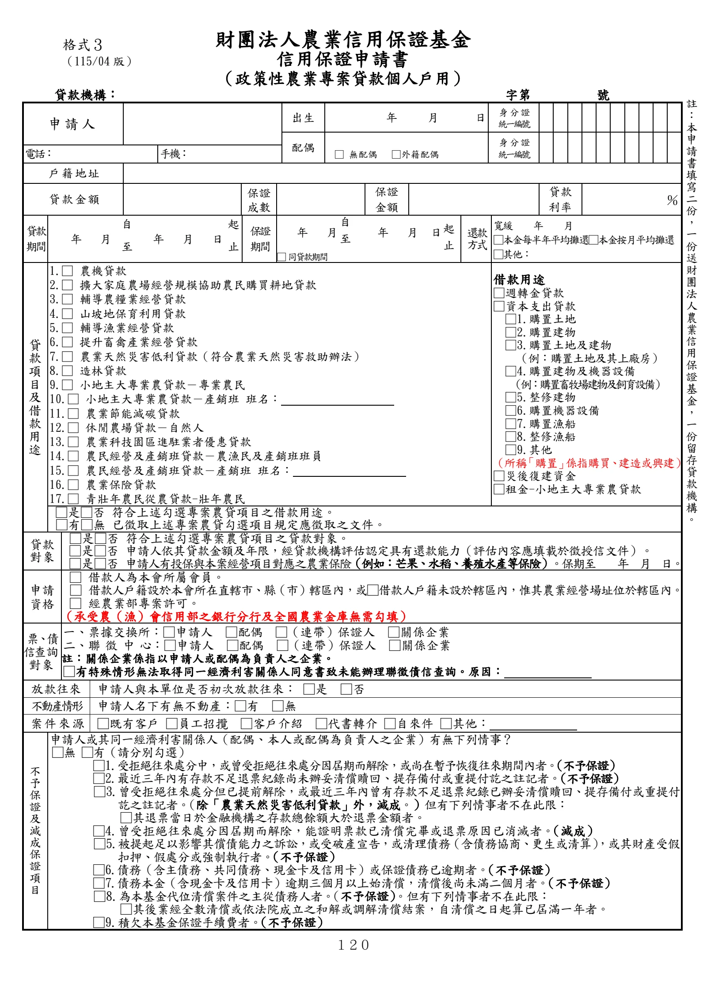

格式 3：信用保證申請書（政策性農業專案貸款個人戶用）
手冊頁：120 PDF頁：132／203

查看PDF文字層
下列文字取自PDF既有文字層，僅供搜尋、複製與無障礙輔助。複雜表格的欄列位置可能失真，正式內容請以原頁預覽或PDF為準。
格式３ （115/04 版） 財團法人農業信用保證基金 信用保證申請書 （政策性農業專案貸款個人戶用） 貸款機構： 字第 號 申請人 出生 年 月 日 身 分 證 統一編號 配偶 □ 無配偶 □外籍配偶 身 分 證 統一編號 電話： 手機： 戶 籍 地 址 貸 款 金 額 保證 成數 保證 金額 貸款 利率 ％ 貸款 期間 年 月 自 至 年 月 日 起 止 保證 期間 年 月 自 至 年 月 日 起 止 還款 方式 寬緩 年 月 □本金每半年平均攤還□本金按月平均攤還 □其他： □ 同貸款期間 貸 款 項 目 及 借 款 用 途 1.□ 農機貸款 2.□ 擴大家庭農場經營規模協助農民購買耕地貸款 3.□ 輔導農糧業經營貸款 4.□ 山坡地保育利用貸款 5.□ 輔導漁業經營貸款 6.□ 提升畜禽產業經營貸款 7.□ 農業天然災害低利貸款（符合農業天然災害救助辦法） 8.□ 造林貸款 9.□ 小地主大專業農貸款－專業農民 10.□ 小地主大專業農貸款－產銷班 班名： 11.□ 農業節能減碳貸款 12.□ 休閒農場貸款－自然人 13.□ 農業科技園區進駐業者優惠貸款 14.□ 農民經營及產銷班貸款－農漁民及產銷班班員 15.□ 農民經營及產銷班貸款－產銷班 班名： 16.□ 農業保險貸款 17.□ 青壯年農民從農貸款-壯年農民 借款用途 □週轉金貸款 □資本支出貸款 □1.購置土地 □2.購置建物 □3.購置土地及建物 （例：購置土地及其上廠房） □4.購置建物及機器設備 （例：購置畜牧場建物及飼育設備） □5.整修建物 □6.購置機器設備 □7.購置漁船 □8.整修漁船 □9.其他 （所稱 「購置」 係指購買、建造或興建） □災後復建資金 □租金-小地主大專業農貸款 □是□否 符合上述勾選專案農貸項目之借款用途。 □有□無 已徵取上述專案農貸勾選項目規定應徵取之文件。 貸款 對象 □是□否 符合上述勾選專案農貸項目之貸款對象。 □是□否 申請人依其貸款金額及年限，經貸款機構評估認定具有還款能力（評估內容應填載於徵授信文件）。 □是□否 申請人有投保與本案經營項目對應之農業保險（例如：芒果、水稻、養殖水產等保險）。保期至 年 月 日。 申請 資格 □ 借款人為本會所屬會員。 □ 借款人戶籍設於本會所在直轄市、縣（市）轄區內，或□借款人戶籍未設於轄區內，惟其農業經營場址位於轄區內。 □ 經農業部專案許可。 （承受農（漁）會信用部之銀行分行及全國農業金庫無需勾填） 票、債 信查詢 對象 一、票據交換所：□申請人 □配偶 □（連帶）保證人 □關係企業 二、聯 徵 中 心：□申請人 □配偶 □（連帶）保證人 □關係企業 註：關係企業係指以申請人或配偶為負責人之企業。 □有特殊情形無法取得同一經濟利害關係人同意書致未能辦理聯徵債信查詢。原因： 放款往來 申請人與本單位是否初次放款往來： □是 □否 不動產情形 申請人名下有無不動產：□有 □無 案 件 來 源 □既有客戶 □員工招攬 □客戶介紹 □代書轉介 □自來件 □其他： 不 予 保 證 及 減 成 保 證 項 目 申請人或其同一經濟利害關係人（配偶、本人或配偶為負責人之企業）有無下列情事？ □無 □有（請分別勾選） □1.受拒絕往來處分中，或曾受拒絕往來處分因屆期而解除，或尚在暫予恢復往來期間內者。（不予保證） □2.最近三年內有存款不足退票紀錄尚未辦妥清償贖回、提存備付或重提付訖之註記者。（不予保證） □3.曾受拒絕往來處分但已提前解除，或最近三年內曾有存款不足退票紀錄已辦妥清償贖回、提存備付或重提付 訖之註記者。（除「農業天然災害低利貸款」外，減成。）但有下列情事者不在此限： □其退票當日於金融機構之存款總餘額大於退票金額者。 □4.曾受拒絕往來處分因屆期而解除，能證明票款已清償完畢或退票原因已消滅者。（減成） □5.被提起足以影響其償債能力之訴訟，或受破產宣告，或清理債務（含債務協商、更生或清算） ，或其財產受假 扣押、假處分或強制執行者。（不予保證） □6.債務（含主債務、共同債務、現金卡及信用卡）或保證債務已逾期者。（不予保證） □7.債務本金（含現金卡及信用卡）逾期三個月以上始清償，清償後尚未滿二個月者。（不予保證） □8.為本基金代位清償案件之主從債務人者。 （不予保證）。但有下列情事者不在此限： □其後業經全數清償或依法院成立之和解或調解清償結案，自清償之日起算已屆滿一年者。 □9.積欠本基金保證手續費者。（不予保證） 註 ： 本 申 請 書 填 寫 二 份 ， 一 份 送 財 團 法 人 農 業 信 用 保 證 基 金 ， 一 份 留 存 貸 款 機 構 。